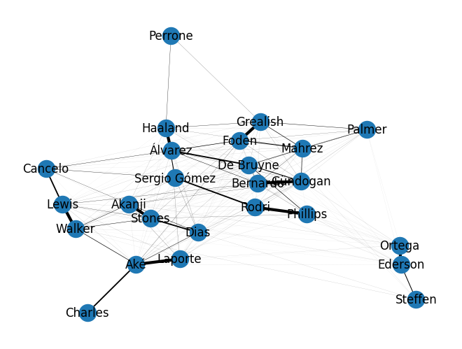
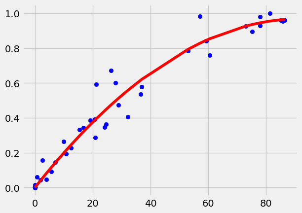
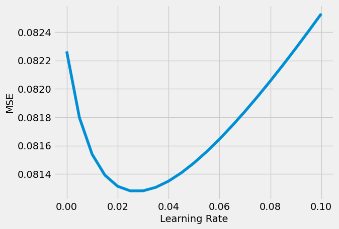
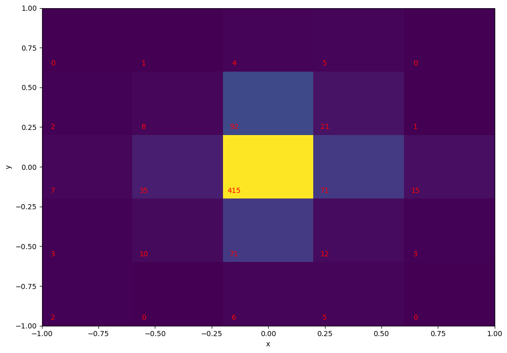

The FPL Prophecy is a football data analysis platform, which aims to provide insights and
projections to help people make informed decisions about their fantasy teams. This project has
challenged me in various domains, including web scraping, organising data, data blending, ETL processes,
data cleaning, exploratory data analysis, forecasting, feature engineering, machine learning, model evaluation,
data visualisation, web development, cloud computing and CI/CD.

How does underlying patterns in teammate replacements (e.g. substitutions, rotations, etc.) reveal player similarity?

If you know the expected minutes (xMins) a footballer will play, can you estimate the probabilties they will play or start, and the expected minutes for given scenarios?

We have a model for predicting fixture outcomes, but what about individual players? How much goal involvement (GI) can you expected from each player?

A Chrome extension leveraging OpenAI's ChatGPT for faster searching. The extension prompts the inner text of the current web page and generates a text response to user input.

This notebook is to wrangle football lineup and player availalibity data and find explore how to predict future lineups given player availabity.